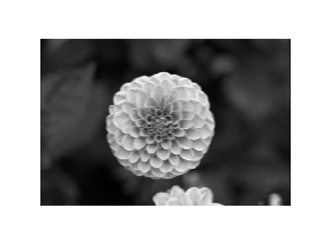
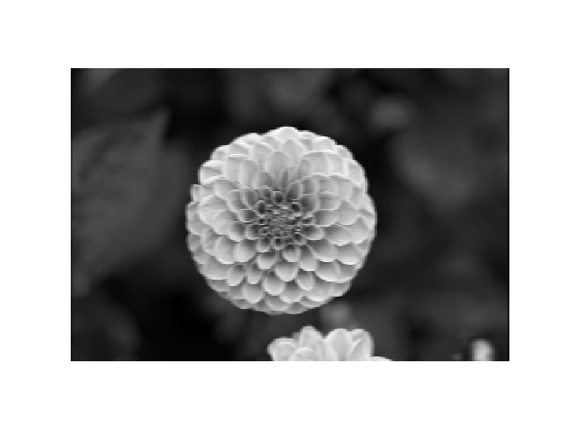
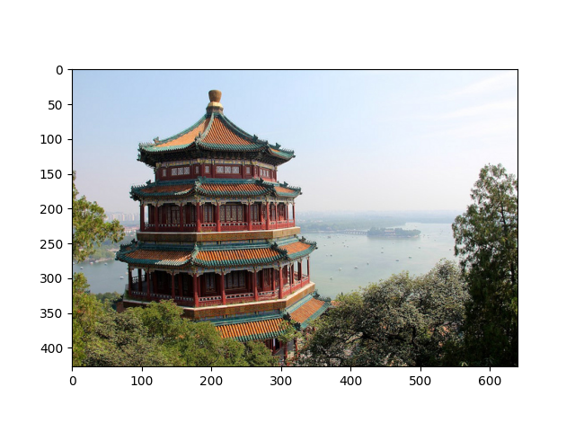
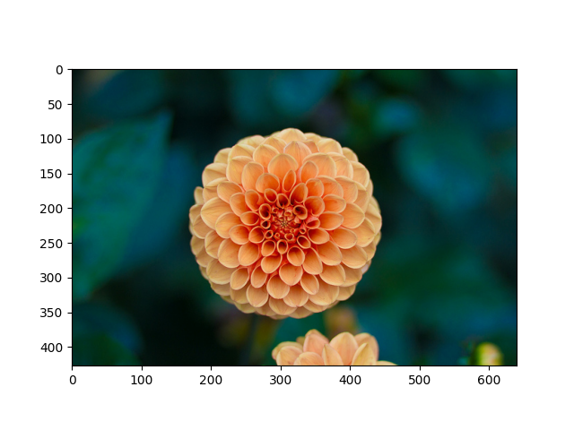
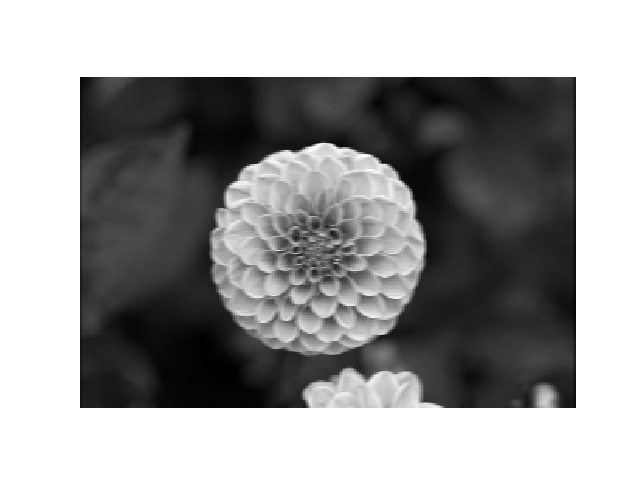

Convnet'ler YSA'lara yeni bazı özellikler ekledi. Öncelikle gizli katman artık ikiden daha fazla derinliğe gidebiliyor. Diğer bir ek, mesela veriye ilk dokunan katmanı sadece evrişim operasyonu için kullanmak.
Evrişim boyutu önceden belli bir matrisi tüm veri üzerinde kaydırarak sonuç değerleri kaydetmekten ibaret, görüntü işlemede yapılan çoğu filtreleme işlemi bir evrişim operasyonu. Mesela 2 x 2 boyutlu bir filtre matrisini tüm veri üzerinde kaydırırız, her kaydırma sırasında o bölgede filtre matrisini değerler ile çarparız, sonucu hatırlarız, çarpılan bölgeye tekabül eden sonuç matrisinde sonucu yazarız. Evrişim matrisi
\[ A = \left[\begin{array}{rrr} 1 & 0 & 1 \\ 0 & 1 & 0 \\ 1 & 0 & 1 \end{array}\right]\]
olsun, görüntü (image) üzerinde çarpım işlemini adım adım gösterelim, sonuç evriştirilmiş özellik (convolved feature) içinde,
Üstteki örnekte kaydırma (stride) sayısı 1. Kaydırma sayısı evrişim matrisini uyguladıktan sonra bir sonraki işlem için kaç hücre yana kayacağımızı kontrol eder. Evrişim matrisinin boyutunun, kaydırma sayısının sonuç matrisin boyutu üzerinde etkileri olacaktır. 5 x 5 matrisi üzerinden 1 kaydırma ile 3 x 3 evrişim uygulayınca 3 x 3 boyutunda bir sonuç elde ettik.
Görüntü işlemede yatay, dikey çizgileri daha belirgin hale getiren, ortaya çıkartan türden, bilinen filtreler vardır, diğer türler de mevcuttur. Fakat derin öğrenim bu evrişim matrisinin içeriğini, ayrıca onu diğer katmanlara bağlayan ağırlıkları da otomatik olarak öğrenir! Çünkü eğer çizgileri ortaya çıkartmak öğrenme işleminin bütününe fayda getiriyorsa öğrenme süreci sırasında evrişim matrisinin değerleri o değerlere evrilir. Evrişimleri bu şekilde ağda kullanmanın convnet'lerin alt katmanlarındaki hata düzeltme işlemini daha rahatlaştırdığı keşfedildi.
Bir yenilik aktivasyon için ReLu (doğrultan lineer ünite -rectified linear unit-) kullanmak, bir diğer katman "aşağı örnekleme (downsampling)'' yapan katman, mesela \(2 \times 2\) içindeki bir pencere içine düşen öğelerin maksimumunu almak. Bir başkası "veri atma (dropout)'' katmanı, veri içinde bir katmandan gelen bağlantıların bir kısmı (dışarıdan ayarlanabilir) rasgele şekilde yoksayılıyor, bu durumda model elde kalanlar ile uydurma işlemini yapmaya uğraşacak, böylece modelde aşırı uygunluk (överfitting) problemlerinden kaçınılmış olunuyor, potansiyel olarak daha sağlam (robust) bir modelin ortaya çıkması sağlanıyor.
Böyle gide gide bir derin ağ yapısı ortaya çıkartmış oluyoruz.
Not: Çoğunlukla evrişim tabakasından sonra ReLu aktviyasyonuna bağlantı yapılır, çünkü eğer aktivasyon olmasa, evrişim sonuçta ağırlıklarla çarpım ve toplam işlemidir, ve bu bir lineer işlemdir, o zaman tüm NN'in işlemi ardı ardına matrislerin çarpımı olarak ta görülebilirdi, ve bu bir lineer işlem olurdu, o zaman NN gayri-lineerligi modelleyemezdi.
TensorFlow ile Evrişim
Şimdi TF kullanarak evrişim yapalım, iki resim üzerinde örneği görelim,
import numpy as np
import tensorflow as tf
from sklearn.datasets import load_sample_images
# Load sample images
dataset = np.array(load_sample_images().images, dtype=np.float32)
batch_size, height, width, channels = dataset.shape
print 'veri tensor boyutu', dataset.shape
plt.imshow(dataset[0,:,:,:] / 255.)
plt.savefig('conv-9.png')
plt.imshow(dataset[1,:,:,:] / 255.)
plt.savefig('conv-10.png')veri tensor boyutu (2, 427, 640, 3) 
Bu iki resmi bir "tensor'' yani çok boyutlu matris içine koyduk, resmin boyutları 640 x 427, eğer tek bir resme bakıyor olsaydık (640,427) boyutlu tek bir matris ile iş yapabilirdik, fakat TF ardı ardına gelen verileri de bir tensorun ayrı boyutları olarak kabul edebiliyor. Ayrıca tensorun son boyutu renk kanalları, üç tane var, RGB renk sistemı için kırmızı (red), yeşil (green) ve mavi (blue) için. Böylece üstteki tensor boyutlarını elde ettik.
Evrişim için 4 tane filtre tanımlayacağız. Bu filtrelerin içeriğinin elle burada tanımlayacağız, yapay öğrenme bağlamında bu içerik eğitim sırasında otomatik olarak öğrenilir, şimdi örnek amaçlı olarak filtre değerlerini biz atıyoruz. Ayrıca istediğimiz kadar filtre tanımlayabilirdik, yapay öğrenmede istenen o'dur ki bu filtreler doğru değerlere doğru evrilir, her filtre görüntünün değişik yerlerine, biçimlerine odaklanmaya başlayabilirler.
in_channels = channels
out_channels = 4
W = np.zeros(shape=(7, 7, in_channels, out_channels), dtype=np.float32)
W[:, 3, :, 0] = 1 # yatay cizgi
W[3, :, :, 1] = 1 # dikey cizgi
W[5, :, :, 2] = 1
W[2, :, :, 3] = 1
X = tf.placeholder(tf.float32, shape=(None, height, width, channels))
convolution = tf.nn.conv2d(X, W, strides=[1,2,2,1], padding="SAME")
with tf.Session() as sess:
output = sess.run(convolution, feed_dict={X: dataset})
print u'evrişimden gelen tensor', output.shapeevrişimden gelen tensor (2, 214, 320, 4)Filtrelerin ilkinde mesela sadece yatay bir çizgi var, bu filtre yatay piksellerin bir ortalamasını alıyor olacak, vs. Parametrelerden kaydırma yatay 2 dikey olarak tanımlı, o zaman her imaj kabaca yarısına inecek, dolgu (padding) için SAME diyerek dolgu yap demişiz, yani kaydırma olmasaydı giren çıkan tensor aynı olurdu. Peki 3 tane ayrı kanal bilgisine ne oldu? Görüntü boyutlar azalarak (320,214) oldu, 4 tane filtre çıkışı var, 2 tane imaj. Kanallar üzerinden bir toplam alındı, yani ayrı kanal bilgisi artık yok. Bu aslında istenen bir şey çünkü bir görüntünün R,G,B kanalları üzerinde ayrı ayrı irdeleme yapmak istemeyiz, sınıflama, karar mekanizmasını tüm imaj üzerinden işletmek isteriz.
Sonuçlar altta, iki tane filtre sonucu örnek olarak seçildi.
def plot_image(image):
plt.imshow(image, cmap="gray", interpolation="nearest")
plt.axis("off")
image_index = 0; feature_map_index = 2
plot_image(output[image_index, :, :, feature_map_index])
plt.savefig('conv-out-%d-%d.png' % (image_index,feature_map_index))
image_index = 1; feature_map_index = 1
plot_image(output[image_index, :, :, feature_map_index])
plt.savefig('conv-out-%d-%d.png' % (image_index,feature_map_index)) 
Cok kanallı durum için açık olmadıysa bir daha vurgulayalım, evrişim katmanı evrişim operatörünü imaj ya da başka bir tensor üzerinde gezdirirken üzerinde olduğu tüm girdi tabakalarını, tüm kanalları kapsayacak şekilde, çarpıp sonucu tek bir öğeye götürür. Bu çarpım için herhalde kanallar bir şekilde düzleştirilip ağırlıklara eşleniyor. Neyse, filtreyi kaydırdıkça çarpım sonucu çıktıda farklı öğeler elde edilir, ve bu bize tek boyutlu bir sonuç kesiti verir. Eğer birden fazla evrişim filtresi uygularsak onların sonuçları farklı sonuç tabakaları olarak diğer tabakaların üzerinde istiflenir.
Mesela altta 20x30 boyutlu ve 3 kanallı bir tensor girdimiz olsun, bu tensorlardan kaç tane olduğunu şimdilik tanımlamadık (mini girdi yığınında yani). Şimdi girdi üzerinde 16 tane filtre gezdiriyoruz, ve 20x30x16 boyutlu çıktı elde ediyoruz.
import tensorflow as tf
tf.reset_default_graph()
input = tf.placeholder(tf.float32, [None, 20, 30, 3])
conv_layer = tf.layers.conv2d(inputs=input, filters=16,
kernel_size=(2,2), padding='same')
print conv_layerTensor("conv2d/BiasAdd:0", shape=(?, 20, 30, 16), dtype=float32)MNIST
Altta MNIST verisini işleyebilen mimarının TF olmadan pür Python kullanan kodunu görüyoruz. Bu yapı ünlü YSA araştırmacısı Yann LeCun'un LeNet adı verilen mimarisi. Veri [5]'ten indirilebilir.
"""Convolutional neural net on MNIST, modeled on 'LeNet-5',
http://yann.lecun.com/exdb/publis/pdf/lecun-98.pdf"""
from __future__ import absolute_import
from __future__ import print_function
import autograd.numpy as np
import autograd.numpy.random as npr
import autograd.scipy.signal
from autograd import grad
from builtins import range
import gzip
import struct
import array
convolve = autograd.scipy.signal.convolve
class WeightsParser(object):
"""A helper class to index into a parameter vector."""
def __init__(self):
self.idxs_and_shapes = {}
self.N = 0
def add_weights(self, name, shape):
start = self.N
self.N += np.prod(shape)
self.idxs_and_shapes[name] = (slice(start, self.N), shape)
def get(self, vect, name):
idxs, shape = self.idxs_and_shapes[name]
return np.reshape(vect[idxs], shape)
def make_batches(N_total, N_batch):
start = 0
batches = []
while start < N_total:
batches.append(slice(start, start + N_batch))
start += N_batch
return batches
def logsumexp(X, axis, keepdims=False):
max_X = np.max(X)
return max_X + np.log(np.sum(np.exp(X - max_X), axis=axis, keepdims=keepdims))
def make_nn_funs(input_shape, layer_specs, L2_reg):
parser = WeightsParser()
cur_shape = input_shape
for layer in layer_specs:
N_weights, cur_shape = layer.build_weights_dict(cur_shape)
parser.add_weights(layer, (N_weights,))
def predictions(W_vect, inputs):
"""Outputs normalized log-probabilities.
shape of inputs : [data, color, y, x]"""
cur_units = inputs
for layer in layer_specs:
cur_weights = parser.get(W_vect, layer)
cur_units = layer.forward_pass(cur_units, cur_weights)
return cur_units
def loss(W_vect, X, T):
log_prior = -L2_reg * np.dot(W_vect, W_vect)
log_lik = np.sum(predictions(W_vect, X) * T)
return - log_prior - log_lik
def frac_err(W_vect, X, T):
return np.mean(np.argmax(T, axis=1) != \
np.argmax(predictions(W_vect, X), axis=1))
return parser.N, predictions, loss, frac_err
class conv_layer(object):
def __init__(self, kernel_shape, num_filters):
self.kernel_shape = kernel_shape
self.num_filters = num_filters
def forward_pass(self, inputs, param_vector):
# Input dimensions: [data, color_in, y, x]
# Params dimensions: [color_in, color_out, y, x]
# Output dimensions: [data, color_out, y, x]
params = self.parser.get(param_vector, 'params')
biases = self.parser.get(param_vector, 'biases')
conv = convolve(inputs, params,
axes=([2, 3], [2, 3]),
dot_axes = ([1], [0]),
mode='valid')
return conv + biases
def build_weights_dict(self, input_shape):
# Input shape : [color, y, x] (don't need to know number of data yet)
self.parser = WeightsParser()
self.parser.add_weights('params', (input_shape[0], self.num_filters)
+ self.kernel_shape)
self.parser.add_weights('biases', (1, self.num_filters, 1, 1))
output_shape = (self.num_filters,) + \
self.conv_output_shape(input_shape[1:], self.kernel_shape)
return self.parser.N, output_shape
def conv_output_shape(self, A, B):
return (A[0] - B[0] + 1, A[1] - B[1] + 1)
class maxpool_layer(object):
def __init__(self, pool_shape):
self.pool_shape = pool_shape
def build_weights_dict(self, input_shape):
# input_shape dimensions: [color, y, x]
output_shape = list(input_shape)
for i in [0, 1]:
assert input_shape[i + 1] % self.pool_shape[i] == 0, \
"maxpool shape should tile input exactly"
output_shape[i + 1] = input_shape[i + 1] / self.pool_shape[i]
return 0, output_shape
def forward_pass(self, inputs, param_vector):
new_shape = inputs.shape[:2]
for i in [0, 1]:
pool_width = self.pool_shape[i]
img_width = inputs.shape[i + 2]
new_shape += (pool_width, img_width // pool_width)
result = inputs.reshape(new_shape)
return np.max(np.max(result, axis=2), axis=3)
class full_layer(object):
def __init__(self, size):
self.size = size
def build_weights_dict(self, input_shape):
# Input shape is anything (all flattened)
input_size = np.prod(input_shape, dtype=int)
self.parser = WeightsParser()
self.parser.add_weights('params', (input_size, self.size))
self.parser.add_weights('biases', (self.size,))
return self.parser.N, (self.size,)
def forward_pass(self, inputs, param_vector):
params = self.parser.get(param_vector, 'params')
biases = self.parser.get(param_vector, 'biases')
if inputs.ndim > 2:
inputs = inputs.reshape((inputs.shape[0], np.prod(inputs.shape[1:])))
return self.nonlinearity(np.dot(inputs[:, :], params) + biases)
class tanh_layer(full_layer):
def nonlinearity(self, x):
return np.tanh(x)
class softmax_layer(full_layer):
def nonlinearity(self, x):
return x - logsumexp(x, axis=1, keepdims=True)
def mnist():
def parse_labels(filename):
with gzip.open(filename, 'rb') as fh:
magic, num_data = struct.unpack(">II", fh.read(8))
return np.array(array.array("B", fh.read()), dtype=np.uint8)
def parse_images(filename):
with gzip.open(filename, 'rb') as fh:
magic, num_data, rows, cols = struct.unpack(">IIII", fh.read(16))
return np.array(array.array("B", fh.read()),
dtype=np.uint8).reshape(num_data, rows, cols)
base_dir = '/home/burak/Documents/Dropbox/Public/data'
train_images = parse_images(base_dir + '/train-images-idx3-ubyte.gz')
train_labels = parse_labels(base_dir + '/train-labels-idx1-ubyte.gz')
test_images = parse_images(base_dir + '/t10k-images-idx3-ubyte.gz')
test_labels = parse_labels(base_dir + '/t10k-labels-idx1-ubyte.gz')
return train_images, train_labels, test_images, test_labels
if __name__ == '__main__':
np.random.seed(0)
# Network parameters
L2_reg = 1.0
input_shape = (1, 28, 28)
layer_specs = [conv_layer((5, 5), 6),
maxpool_layer((2, 2)),
conv_layer((5, 5), 16),
maxpool_layer((2, 2)),
tanh_layer(12),
tanh_layer(84),
softmax_layer(10)]
# Training parameters
param_scale = 0.1
learning_rate = 1e-3
momentum = 0.9
batch_size = 500
num_epochs = 50
# Load and process MNIST data
print("Loading training data...")
add_color_channel = lambda x : x.reshape((x.shape[0], 1, x.shape[1], x.shape[2]))
one_hot = lambda x, K : np.array(x[:,None] == np.arange(K)[None, :], dtype=int)
train_images, train_labels, test_images, test_labels = mnist()
train_images = add_color_channel(train_images) / 255.0
test_images = add_color_channel(test_images) / 255.0
train_labels = one_hot(train_labels, 10)
test_labels = one_hot(test_labels, 10)
test_sampler = np.random.permutation(len(test_labels))[:100]
train_sampler = np.random.permutation(len(train_labels))[:1000]
train_images = train_images[train_sampler]
train_labels = train_labels[train_sampler]
test_images = test_images[test_sampler]
test_labels = test_labels[test_sampler]
N_data = train_images.shape[0]
from sklearn import neighbors
train_images_3 = np.reshape(train_images, (1000,28*28))
test_images_3 = np.reshape(test_images, (100,28*28))
clf = neighbors.KNeighborsClassifier()
clf.fit(train_images_3,train_labels)
res = clf.predict(test_images_3)
res2 = [np.all(x) for x in (res==test_labels)]
print ('KNN')
print ( np.sum(res2) / 100.)
# Make neural net functions
N_weights, pred_fun, loss_fun, \
frac_err = make_nn_funs(input_shape, layer_specs, L2_reg)
loss_grad = grad(loss_fun)
# Initialize weights
rs = npr.RandomState()
W = rs.randn(N_weights) * param_scale
print(" Epoch | Train err | Test error ")
def print_perf(epoch, W):
test_perf = frac_err(W, test_images, test_labels)
train_perf = frac_err(W, train_images, train_labels)
print("{0:15}|{1:15}|{2:15}".format(epoch, train_perf, test_perf))
# Train with sgd
batch_idxs = make_batches(N_data, batch_size)
cur_dir = np.zeros(N_weights)
for epoch in range(num_epochs):
print_perf(epoch, W)
for idxs in batch_idxs:
grad_W = loss_grad(W, train_images[idxs], train_labels[idxs])
cur_dir = momentum * cur_dir + (1.0 - momentum) * grad_W
W -= learning_rate * cur_dir
np.savetxt('W',W)Loading training data...
KNN
0.82
Epoch | Train err | Test error
0| 0.92| 0.93
1| 0.89| 0.9
2| 0.798| 0.82
3| 0.767| 0.74
4| 0.727| 0.67
5| 0.678| 0.71
6| 0.627| 0.65
7| 0.563| 0.56
8| 0.503| 0.53
9| 0.445| 0.49
10| 0.418| 0.45
11| 0.357| 0.41
12| 0.34| 0.39
13| 0.322| 0.36
14| 0.287| 0.32
15| 0.258| 0.29
16| 0.261| 0.33
17| 0.232| 0.27
18| 0.216| 0.25
19| 0.206| 0.25
20| 0.188| 0.22
21| 0.171| 0.23
22| 0.164| 0.23
23| 0.175| 0.25
24| 0.121| 0.21
25| 0.152| 0.19
26| 0.169| 0.21
27| 0.145| 0.18
28| 0.119| 0.22
29| 0.099| 0.18
30| 0.073| 0.16
31| 0.083| 0.2
32| 0.066| 0.17
33| 0.06| 0.18
34| 0.052| 0.18
35| 0.042| 0.18
36| 0.034| 0.16
37| 0.034| 0.18
38| 0.027| 0.17
39| 0.023| 0.15
40| 0.026| 0.18
41| 0.017| 0.16
42| 0.012| 0.16
43| 0.011| 0.14
44| 0.011| 0.12
45| 0.008| 0.14
46| 0.009| 0.13
47| 0.007| 0.15
48| 0.006| 0.12
49| 0.005| 0.15Tarih
Convnet'lerin son zamanlarda başarılı olmaya başlamasında bazı etkenler şunlar: en önemlisi araştırmacıların dışbükey olmayan kayıp fonksiyonlarından (non-convex loss functions) korkmadan (!) onların minimumunu rasgele gradyan inişi üzerinden bulabilmeye başlamaları. Convnet, HMM, Gaussian karışımlar gibi pek çok alanda dışbükey olmayan bir durum vardır, hatta bir bakıma ciddi her yapay öğrenim alanında bu durum ortaya çıkar. Bu optimizasyon problemi rasgele gradyan inişi ile çözülmeye başlandı. Gerçi rasgele gradyan inişi çok basit bir yöntemdir, fakat araştırmacılar yıllarca bu yöntemi dışbükey olmayan yerlerde kullanmadılar çünkü yakınsama (convergence) garantileri teorik olarak mümkün değildi. Kıyasla bir dışbükey fonksiyonun minimumuna varmak doğru yöntemler ile garantidir. Fakat son araştırmalara göre rasgele gradyan inişi ile optimizasyon eğitim verisi üzerinden yakınsama garantisi olmasa bile test verisi üzerinde bazı garantilerin olduğu ortaya çıktı, ki test skoru eğitim skorundan daha önemli.
Bir diğer gelişme ağ yapısında gizli katmandaki nöron sayısını genişletince, minimum noktasının pek çok yerde ortaya çıkabilmesi, ve bu noktaların birbiriyle aşağı yukarı aynı olması. Yani gradyan inişi bu noktalardan birini bulduğunda iş bitmiş sayılabiliyor. Ayrıca çok boyut olunca yerel minima'da takılıp kalmadan bir yan boyuta atlayıp önümüzdeki tepenin etrafından dolaşabilme şansı ortaya çıkıyor [4].
Ek bir gelişme herhangi bir yazılım fonksiyonun türevinin alınabilmesini sağlayan otomatik türev alma (automatic differentiation) tekniğinin yaygınlaşması, ki bu teknik çetrefil nöron fonksiyonları içerebilen convnet'ler için faydalı oldu. Not: dikkat otomatik türev ile {} fonksiyon hatta if, while komutları içeren bir kod parçasının bile türevi alınabiliyor (bkz [2] yazısı). Türevler önemli çünkü gradyan inişi minimuma gidebilmek için türev kullanmalı. Üstteki kodda dikkat çekmiş olabilir, sinir ağında aslında yaptığımız tek hesap ileri doğru beslemeli (feed-forward) olan hesap; her veri noktası için ağın başından başlayarak girdi / işlem / sonuçları ardı ardına bir sonraki katmana aktarıyoruz, otomatik türev pek çok katmanlı bu işlemlerin türevini alarak bize o gidişin yaptığı tahminlerin hatasını düzeltmek için gidilmesi gereken gradyan yönünü veriyor.
Bazı negatifler: Convnet'lerin eğitimi hızlı değildir, ciddi kullanımlar için GPU, ya da paralel CPU kullanmak şart. Ayrıca convnet'lerin bir fark yaratması için oldukça çok veriye ihtiyaçları var, normal ölçek veri ortamında diğer yaklaşımlar da convnet'ten çok daha kötü değiller. Bir diğeri bir YSA'nın, yapı olarak, istatistiki bir anlamının olmaması: Bir ağ yapısı var, fakat bu ağın tamamının olasılıksal olarak irdelenmesi mümkün değil. Kıyasla bir GMM bir olasılığı temsil eder, bu sebeple yaptığı hesapların mesela güven aralığını hesaplamak mümkündür. Diğer yanda mesela tıbbi bir uygulama bağlamında YSA bir tahmin yapınca bundan "ne kadar emin olduğu'' sorusunun direk cevabı alınamıyor. Bu alanda araştırmalar var tabii, ilginç bazı buluşlar bunu mümkün kılabilir.
Kaynaklar
[2] Bayramlı, Bilgisayar Bilim, Otomatik Türev
[3] Machine learning algorithms, https://github.com/rushter/MLAlgorithms
[4] LeCun, Who is Afraid of Non-Convex Loss Functions?, https://youtu.be/8zdo6cnCW2w
[5] LeCun, MNIST Verisi, http://yann.lecun.com/exdb/mnist